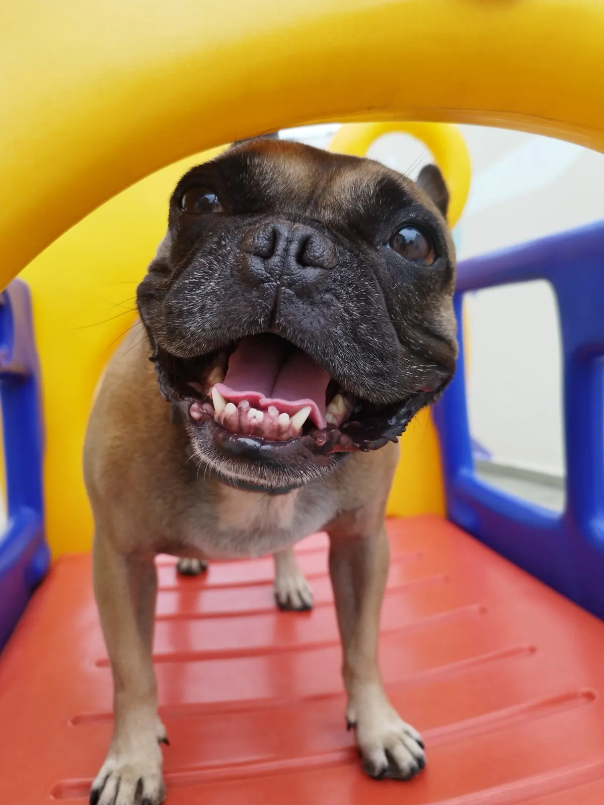
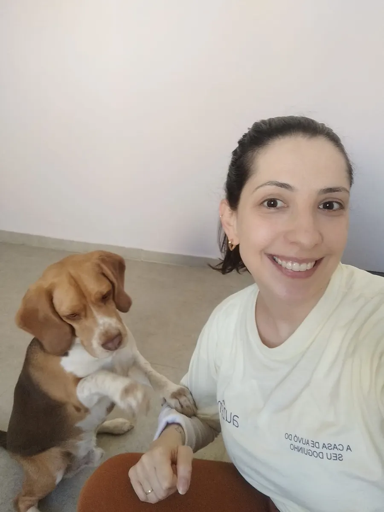
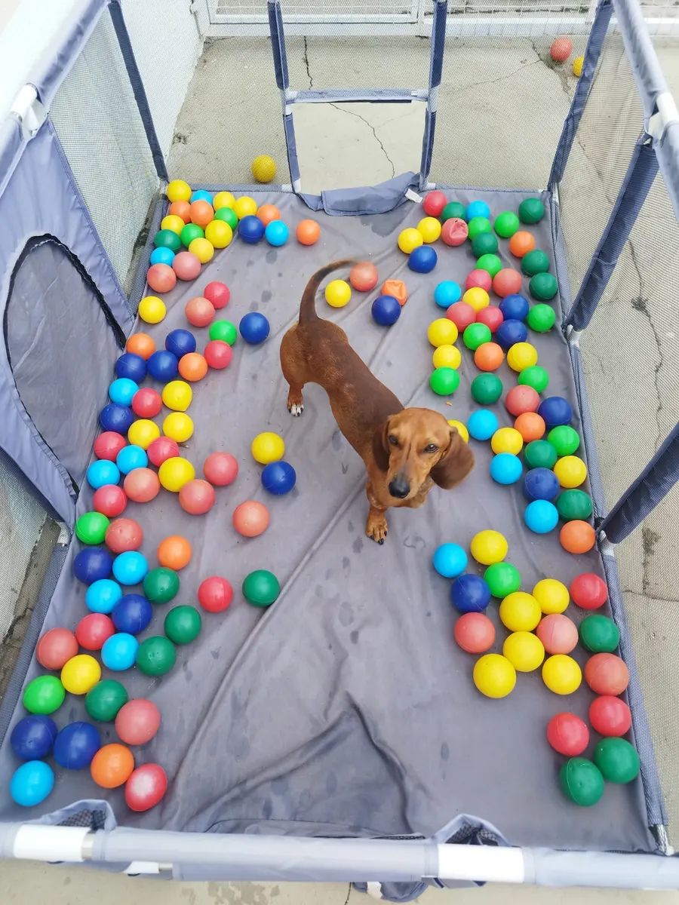
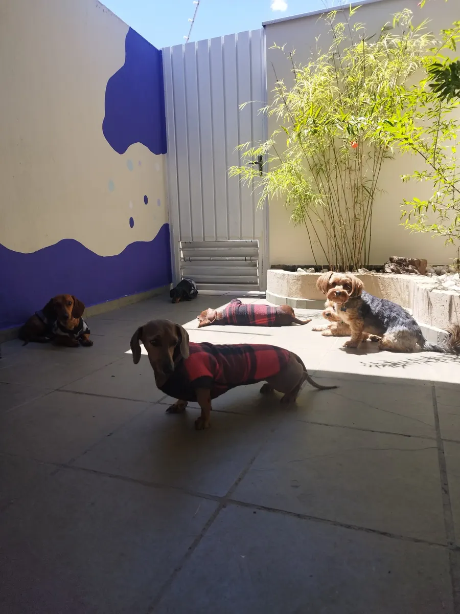
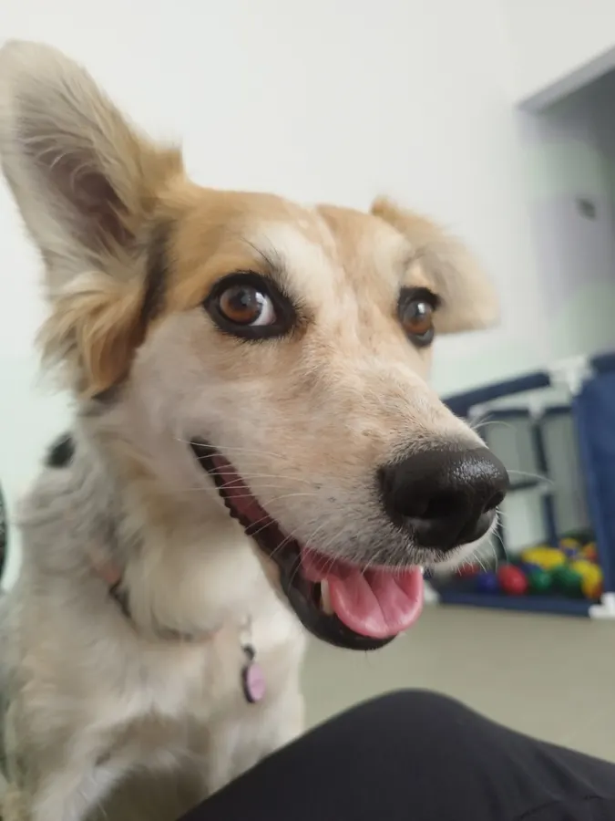

Creche para cães
Socialização acompanhada, brincadeiras, enriquecimento ambiental e pausas de descanso para cães de pequeno porte.
Conhecer a crecheCreche e hotel para cães em Sorocaba
Um espaço feito para cães de pequeno porte brincarem, socializarem e descansarem em grupos reduzidos, sempre sob supervisão veterinária.
A avaliação comportamental é o primeiro passo para uma adaptação segura.

Grupos reduzidos
para atenção de verdade
Foco em pequeno porte
com convivência mais harmoniosa
Supervisão veterinária
em toda a rotina

Dra. Ana Lúcia
Médica-veterinária e fundadora
Nossa essência
A Auzên nasceu da certeza de que cada cão merece ser conhecido pelo nome, respeitado no seu ritmo e cuidado por inteiro.
Por isso, não buscamos lotação. Criamos grupos harmoniosos, combinamos atividade e descanso e observamos de perto o comportamento de cada pequeno.
“Cada escolha da rotina passa pelo bem-estar físico e emocional do seu pet.”
Ana Lúcia Bonilha Scomparim Balera
Primeiros passos
Conhecemos seu pet com calma para entender se a rotina e o grupo combinam com as necessidades dele.
Você chama no WhatsApp, conta um pouco sobre seu cão e agenda uma visita ao espaço.
Observamos o temperamento e a interação para promover uma convivência segura.
Com vacinas e prevenção em dia, seu pequeno começa a adaptação no ritmo certo.
Quer saber se a Auzên combina com seu pet? Conte para nós como ele é.
Conversar no WhatsAppCuidado completo
Da diversão durante o dia à hospedagem, mantemos o mesmo olhar individual.
Socialização acompanhada, brincadeiras, enriquecimento ambiental e pausas de descanso para cães de pequeno porte.
Conhecer a crecheHospedagem acolhedora e supervisionada para você viajar sabendo que seu pequeno está bem cuidado.
Consultar hospedagemConsultas e orientações de saúde realizadas no local pela médica-veterinária responsável pelo espaço.
Pedir informaçõesUm dia na Auzên
Uma boa rotina não é uma sequência de estímulos. Alternamos momentos para o corpo, a mente e o descanso.



Nossa estrutura
Um recorte de dias reais por aqui. Clique nas fotos para ampliar.
Perguntas frequentes
Se não encontrar sua resposta aqui, mande uma mensagem. Gostamos de conhecer cada família desde a primeira conversa.
Fazer uma perguntaProtocolo vacinal completo — V8/V10, raiva, gripe e giárdia — e controle de ectoparasitas em dia. Também realizamos uma avaliação comportamental antes do início.
Para machos acima de seis meses, a castração é obrigatória. Fêmeas não podem frequentar o espaço durante o período de cio.
Cada família envia a porção de alimento do seu pet. Ela é servida individualmente, respeitando a rotina e o horário habitual de casa.
Nosso espaço tem foco em cães de pequeno porte. A avaliação individual ajuda a confirmar se a dinâmica da turma é adequada para cada pet.
Sim. Enviamos fotos e vídeos para que você acompanhe momentos da rotina do seu pequeno.
Venha conhecer
Agende uma visita e conheça pessoalmente a estrutura, a rotina e quem vai cuidar dele.